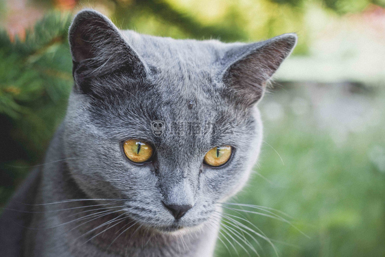

The British Shorthair is the pedigreed version of the traditional British domestic cat, with a distinctively stocky body, dense coat, and broad face. The most familiar color variant is the "British Blue," a solid grey-blue coat, orange eyes, and a medium-sized tail. The breed has also been developed in a wide range of other colours and patterns, including tabby and colorpoint. You can see the picture below... Let's see !
Appearance
The British Shorthair is a relatively powerful-looking large cat, having a broad chest, strong thick-set legs with rounded paws and a medium-length, blunt-tipped tail. The head is relatively large and rounded, with a short muzzle, broad cheeks (most noticeable in mature males, who tend to develop prominent jowls) and large round eyes that are deep coppery orange in the British Blue and otherwise vary in colour depending on the coat. Their large ears are broad and widely set. The British Blue variant can often be confused with the grey Scottish Fold. However, the Shorthair can be characterised by having its pointy triangle ears, whereas the Fold has softer, folded ears. They are slow to mature in comparison with most cat breeds, reaching full physical development at approximately three years of age. Unusually among domestic cats they are a noticeably sexually dimorphic breed, with males averaging 9–17 lb (4.1–7.7 kg) and females 7–12 lb (3.2–5.4 kg).
Image
